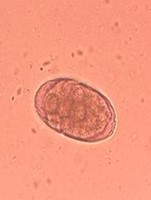
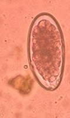
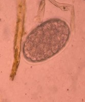
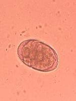
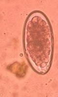
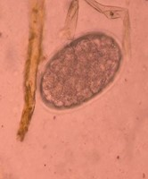

Nota. a. Larva, b. pared del huevecillo. La imagen se observó a 40X.
Los huevos que producen la hembras de Strongyloides son larvados, cuando pasan a las heces y al medio ambiente estos huevecillos pueden eclosionar, si se convierten en larvas infecciosas pueden infectar a los animales a través de la ingesta o por medio de la piel. Los animales que tienen un bajo sistema inmune pueden llegar a presentar anorexia y diarrea con sangre. (Hendrix, C. 2017).
La Organización de las Naciones Unidas para la Alimentación y la Agricultura (s.f), menciona que estos huevecillos poseen una Longitud 47-65 µm, con un Ancho de 25-26 µm, suelen tener una forma de elipse y sus polos se presentan un poco aplanados.
 





Nota. Se observan huevecillos con una cascara ovalada la cual contiene en su interior estructuras que se asemejan a mórulas. Huevecillos observados a 40X.
Zajac, A. (2012) Menciona en su libro que la identificación del genero en el orden Strongylida no es confiable debido al parecido de los huevecillos, se debe de llevar a incubar para observar la larva L3 y así poder hacer su identificación de género.
Algunos de los géneros que podemos mencionar son los siguientes: Ostertagia, Haemonchus, Cooperia, Trichostrongylus, Oesophagostomum, Bunostomum, Chabertia.
La infección de huevecillos de Strongylida se da cuando los huevecillos morulados son defecados en las heces al ambiente y ahí empieza a desarrollar su estadio larvario, hasta llegar a la larva infectante, la cual si los rumiantes la ingieren a través del pasto contaminado se infectan. (Bowman, D. 2014).
Nota. Las flechas señalan huevecillos de Moniezia las cuales contienen en su interior un embrioforo que contienen una oncosfera (Litlle, E. 2014). Huevecillos observado a 40X.
Este parásito necesita de un huésped intermediario para completar su ciclo el cual es un acaro de vida libre que se encuentra en los pastos, si los animales presentan una gran infestación puede afectar su crecimiento. Estos huevecillos suelen medir 65–75 µm de diámetro. (Zajac, A. 2012).
Con respecto a su forma Zajac, A. (2012) menciona que la forma de los huevecillos de Moniezia suelen verse cuadrados o en forma de triángulos, lo cual los hace muy diferentes al resto de huevecillos.